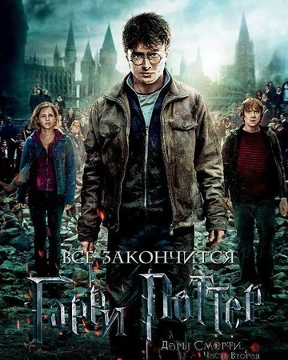
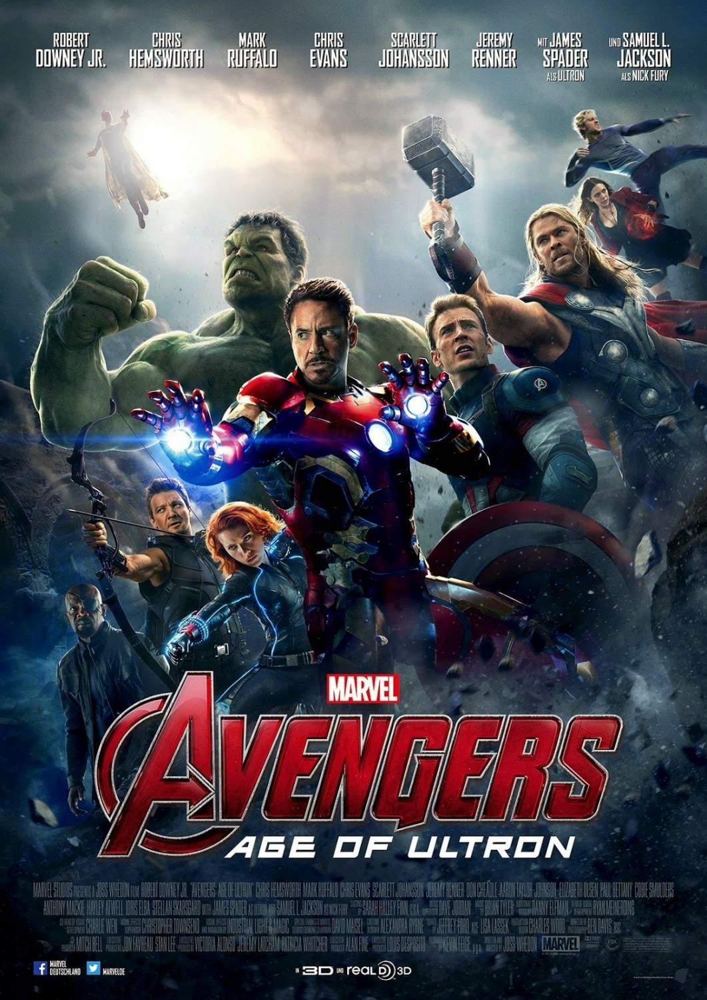

Обирайте на вибір тему, що вас цікавить та натисніть на неї, щоб відкрити.
Список заснований на остаточних сумах, зароблених фільмами з продажу квитків у кінотеатрах. Прибуток від відеопрокату, показу телебаченням тощо не враховується. Суми вказуються у доларах США і не враховують інфляцію. Через ефект інфляції ціни на квитки в кінотеатри збільшуються з часом, що дає новішим фільмам вищі позиції в списку. Тому список, що не враховує інфляцію, не може бути об'єктивним способом порівняння зборів фільмів, що вийшли у різні роки. Студії воліють не враховувати інфляцію, щоб не зменшувати показники сучасних зборів.
 
| # | Назва фільму | Студія | Світові збори $ | Рік |
|---|---|---|---|---|
| 1 | Аватар | 20th Century Fox / Dune Entertainment | 2 787 965 087 | 2009 |
| 2 | Титанік (з урахуванням 3D-версії 2012 року) | 20th Century Fox / Paramount Pictures / Lightstorm Entertainment | 2 186 772 302 | 1997 |
| 3 | Зоряні війни: Пробудження Сили | Walt Disney Pictures / Lucasfilm / Bad Robot Productions | 2 068 223 624[ | 2015 |
| 4 | Месники: Війна нескінченності | Marvel Studios / Walt Disney Pictures | 2 048 359 754 | 2018 |
| 5 | Світ Юрського періоду | Universal Pictures / Legendary Pictures / Amblin Entertainment | 1 670 400 637[ | 2015 |
| 6 | Месники | Marvel Studios / Marvel Entertainment | 1 518 812 988 | 2012 |
| 7 | Форсаж 7 | Universal Pictures / Original Film / One Race Films | 1 516 045 911 | 2015 |
| 8 | Месники: Ера Альтрона | Marvel Studios | 1 405 403 694 | 2015 |
| 9 | Чорна Пантера | Marvel Studios / Walt Disney Pictures | 1 346 904 876 | 2018 |
| 10 | Гаррі Поттер та Смертельні Реліквії: частина 2 | Heyday Films / Warner Bros. Pictures / Moving Picture Company | 1 341 511 219 | 2011 |
| Уся інформація та дані взяті зі сайту WikipediA | ||||
Кіноіндустрія бере свій початок ще до подій Першої світової війни. 6 січня 1896 у Парижі відбулась прем'єра першого у світі фільму, авторами якого є брати Люм'єр - "Прибуття поїзда на вокзал".
Під час сеансу фільму- люди, що були зібрані вперше у кінотеатрі, побачили на екрані рухоме зображення і подумали, що на них їде справжній поїзд. Усі почали панікувати, кидатися до виходу тощо. Хоча фільм і тривав близько 50 секунд, але навіть на той час це був величезный прогрес, що дав початок сучасним фільмам, відео та шоу, без яких майже неможливо уявити сучасне життя.
Вважається, що перший кольоровий фільм був відзнятий ще у далекому 1902 році, британським фотографом Едвардом Тернером.
Троє дітей тримають в руках соняшники. Золота рибка плаває в акваріумі. Папуга ходить по жердині. Люди жваво рухаються вулицями Лондона і Брайтона. Ці прості кадри – найперший в історії кольоровий фільм.